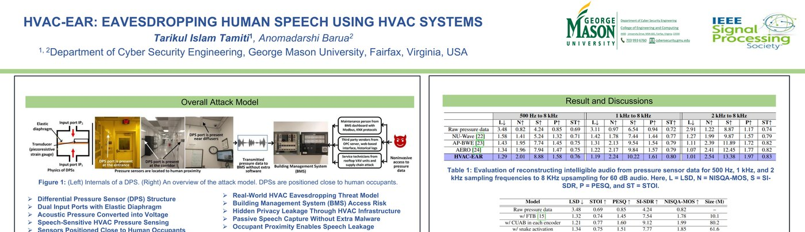
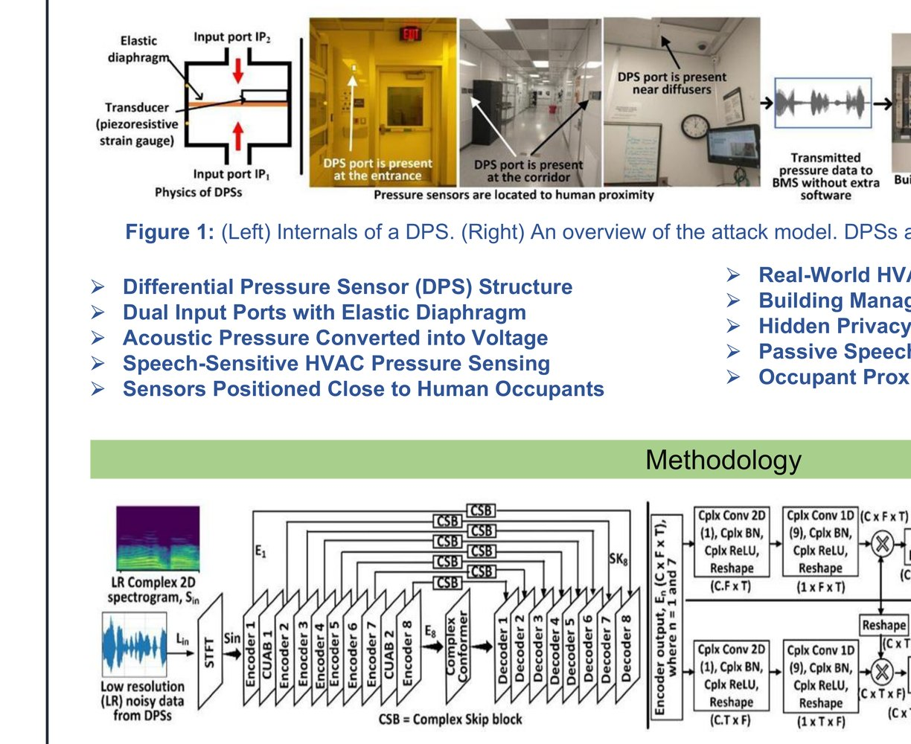
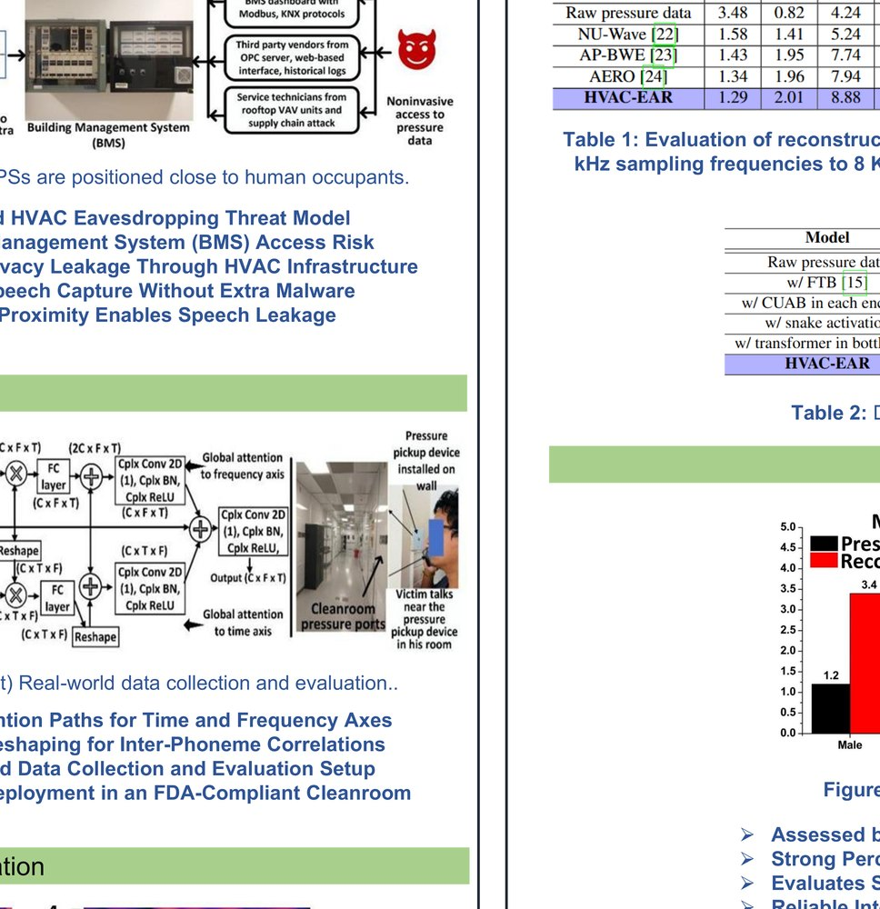
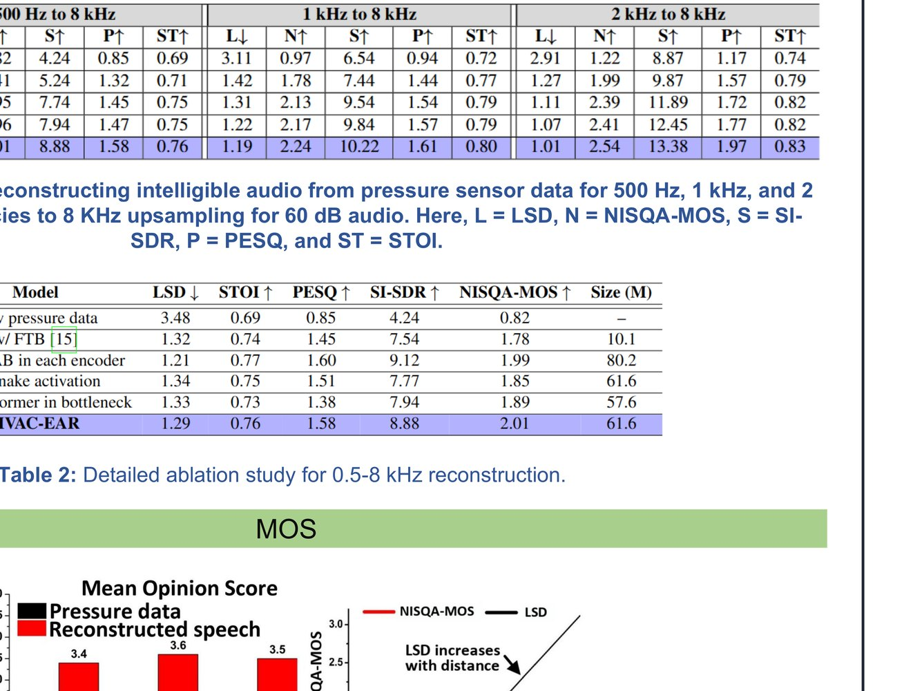
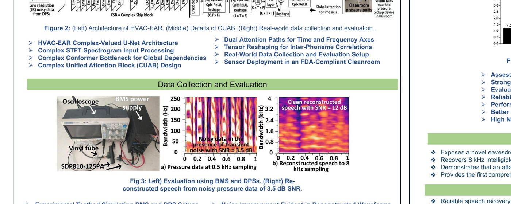
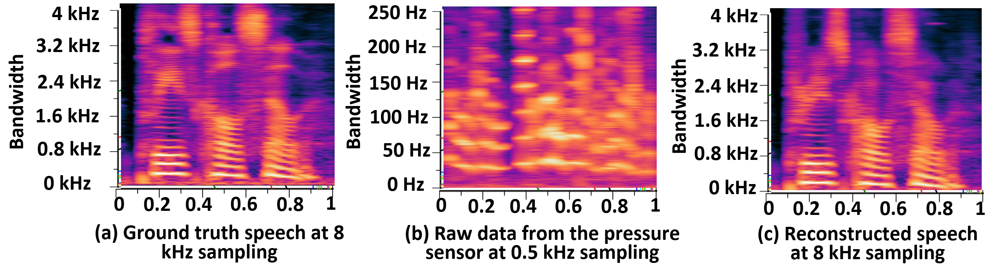
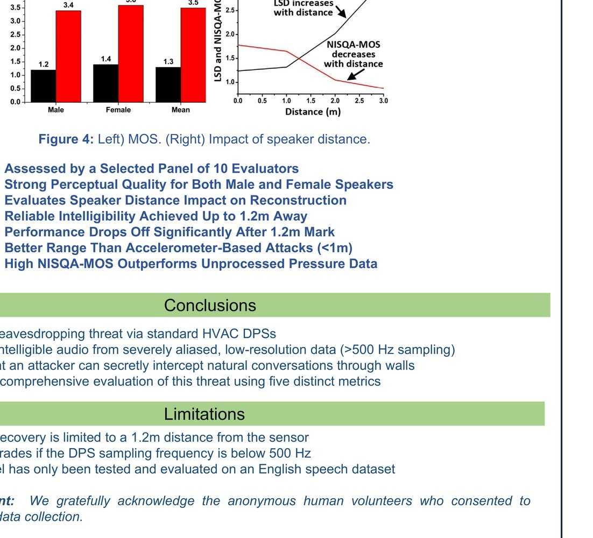

HVAC-EAR Explainer
When Buildings Accidentally Listen
A 15-minute breakdown of our ICASSP 2026 work, HVAC-EAR: Eavesdropping Human Speech Using HVAC Systems.

The short version
Modern buildings are full of sensors. Some of them measure temperature, some measure motion, and some measure pressure so the HVAC system can regulate airflow. HVAC-EAR asks an uncomfortable question: can pressure sensors inside building infrastructure accidentally capture enough acoustic information to reconstruct human speech?
Our answer is yes, under realistic constraints. Differential pressure sensors used in HVAC systems are sensitive to pressure changes, and speech is also pressure variation in air. HVAC-EAR shows that low-resolution, noisy pressure data can be transformed into intelligible speech using a complex-valued neural network that reconstructs both magnitude and phase.

Why HVAC pressure sensors are surprising
Differential pressure sensors are normal components in Heating, Ventilation, and Air Conditioning systems. They help monitor pressure differences for filter health, duct static pressure, variable air volume control, and pressure balancing between rooms.
The privacy issue appears because these sensors often operate in pressure ranges that overlap with human speech pressure, and their sampling rates can reach the 0.5 to 2 kHz range. That does not capture full speech bandwidth, but it can capture enough low-frequency structure to make reconstruction possible.
The threat model
HVAC-EAR does not assume that an attacker installs a microphone in the room. The concern is subtler: pressure sensor data may already be available through Building Management Systems, logs, OPC servers, vendor dashboards, rooftop units, or maintenance interfaces.
In real facilities, pressure ports can be located near entrances, corridors, diffusers, and other places close to occupants. That proximity turns a benign control sensor into a possible side channel.

The model: reconstructing what the sensor never meant to hear
HVAC-EAR treats the pressure signal as a low-resolution, noisy, aliased version of speech. The model first converts it into a complex time-frequency spectrogram and then reconstructs a cleaner, higher-bandwidth signal.
The architecture uses complex-valued encoders and decoders, complex skip blocks, and a complex conformer in the bottleneck. This matters because pressure data is not just missing magnitude information; transient HVAC noise also corrupts phase. Reconstructing both magnitude and phase is crucial for intelligibility.
Algorithm 1: HVAC-EAR End-to-End Speech Reconstruction
Input:
p(t): differential pressure sensor waveform
f_out = 8 kHz: target speech sampling rate
Output:
y_hat(t): reconstructed speech waveform
1. Collect pressure waveform p(t) from the HVAC differential pressure channel.
2. Standardize clip length and resample the pressure signal for the target setup
(500 Hz, 1 kHz, or 2 kHz input reconstructed toward 8 kHz speech).
3. Compute the complex STFT:
S_in = S_real + j * S_imag.
4. Pass S_in through eight complex encoder blocks:
complex convolution, complex batch normalization, and complex activation.
5. Store encoder features and process them through complex skip blocks.
6. Insert Complex Unified Attention Blocks after selected encoders to model
long-range time and frequency dependencies.
7. Send the bottleneck representation through a complex conformer module.
8. Decode with eight complex decoder blocks, using skip features from the encoder.
9. Estimate the clean complex spectrogram S_hat.
10. Train with complex multi-resolution STFT loss over multiple FFT resolutions,
comparing real and imaginary components across resolutions.
11. Apply inverse STFT to S_hat and return reconstructed speech y_hat(t).
CUAB: attention across time and frequency
The Complex Unified Attention Block, or CUAB, is designed to capture relationships along both time and frequency axes in a complex spectrogram. Time-axis attention helps model inter-phoneme dependencies. Frequency-axis attention helps model harmonic structure.
This is important because low-resolution pressure data lacks the rich spectral detail that normal speech enhancement models expect. CUAB gives the model a way to reason globally about what information should be restored.
Algorithm 2: Complex Unified Attention Block (CUAB)
Input:
E: complex encoder feature map with channel, frequency, and time axes
Output:
E_att: attention-enhanced complex feature map
1. Split E into real and imaginary components.
2. Build a time-attention branch:
2.1 Reshape features to emphasize time-axis structure.
2.2 Apply complex projection and fully connected layers along time.
2.3 Produce a time attention map A_t.
3. Build a frequency-attention branch:
3.1 Reshape features to emphasize frequency-axis structure.
3.2 Apply complex projection and fully connected layers along frequency.
3.3 Produce a frequency attention map A_f.
4. Reweight encoder features with A_t and A_f.
5. Concatenate the attended time and frequency features.
6. Fuse them with complex convolution, normalization, and activation.
7. Return E_att.

How we evaluated it
The study includes a real-world FDA-compliant cleanroom setting and a controlled testbed built with the same type of commercial differential pressure sensor, vinyl tubes, and pressure pickup device. The dataset includes 30 volunteers and 900 minutes of pressure data paired with ground-truth audio.
The evaluation tests reconstruction from 500 Hz, 1 kHz, and 2 kHz pressure data upsampled to 8 kHz. We use five metrics: Log Spectral Distance, NISQA-MOS, SI-SDR, PESQ, and STOI.

What the results show
HVAC-EAR outperforms bandwidth-extension baselines such as NU-Wave, AP-BWE, and AERO on pressure sensor data. For 500 Hz to 8 kHz reconstruction, HVAC-EAR achieves stronger performance across the reported metrics, including LSD, NISQA-MOS, SI-SDR, PESQ, and STOI.
One practical example from the poster shows reconstruction from noisy pressure data with transient HVAC noise: the signal improves from 3.5 dB SNR to 12 dB SNR after reconstruction. That matters because HVAC environments are not quiet audio labs. They include vibration, shocks, turbulence, and other transient noise.

What listeners heard
A subjective evaluation with 10 listeners found that reconstructed speech had much higher perceptual quality than raw pressure data. The paper also studies distance from the pressure sensor. The system remains reliable up to about 1.2 meters, after which intelligibility degrades sharply.

Why this matters
The key lesson is not that HVAC systems are microphones. They are not. The lesson is that cyber-physical sensors can leak information from physical processes they were never designed to observe.
In sensitive spaces such as cleanrooms, hospitals, laboratories, offices, and campuses, pressure data may be treated as harmless operational telemetry. HVAC-EAR shows that this assumption needs to be revisited.
Limitations
HVAC-EAR has important boundaries. The current evaluation uses English speech, performance degrades beyond about 1.2 m, and reconstruction becomes unreliable when the pressure sensor sampling rate falls below 500 Hz.
Those limitations are important for responsible interpretation. The contribution is not a claim that every HVAC sensor can reveal every conversation. It is evidence that a real and previously underexplored privacy channel exists.